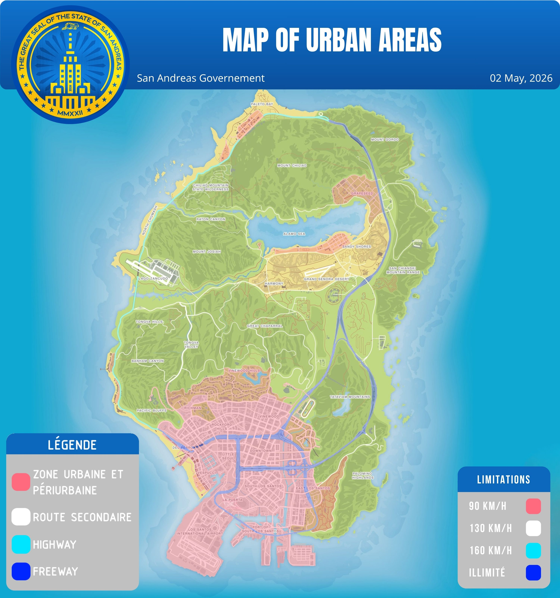
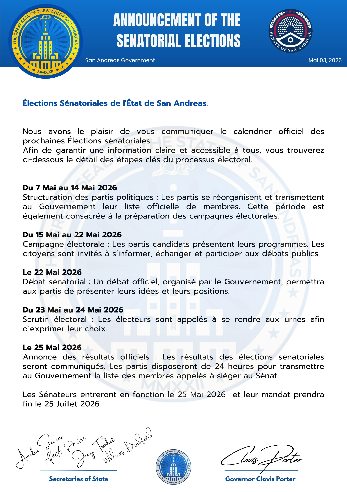
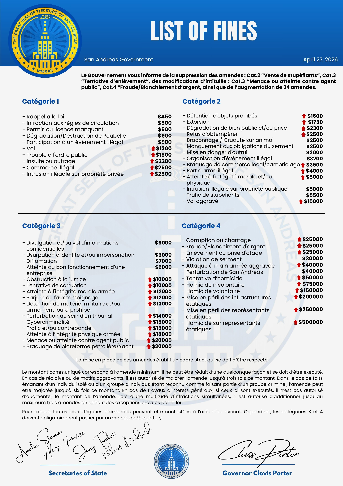
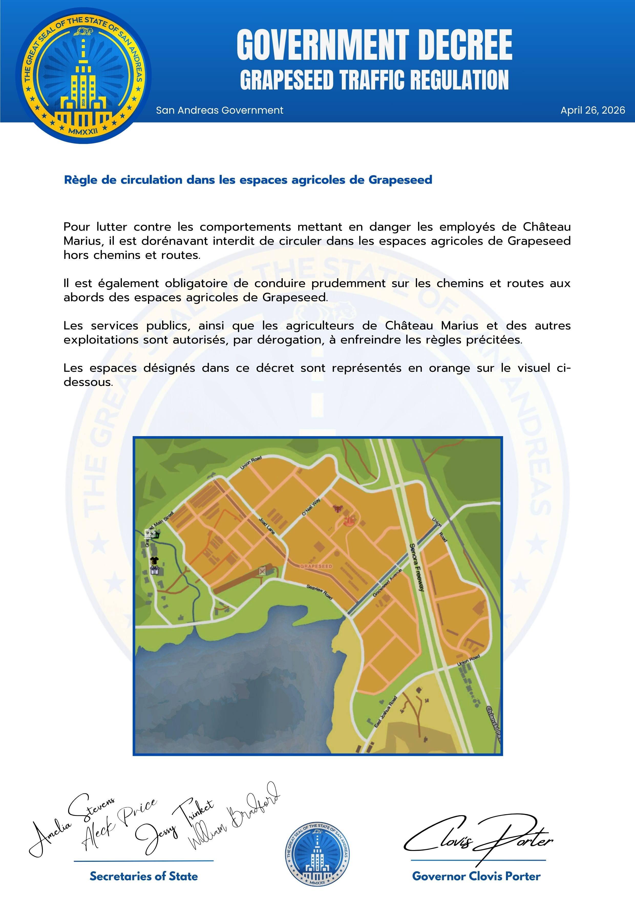

Gouvernement
Carte des zones
Publication de la cartographie officielle des zones
Publication de mai 2026

Site officiel de la Justice de l'Etat de San Andreas.

Publication de la cartographie officielle des zones
Publication de mai 2026

Communication officielle relative à l'élection des Sénateurs.
Publication de mai 2026

Publication du Gouvernement sur la liste des amendes
Publication le 27 avril 2026

Communication du Gouvernement : décret relatif à la circulation dans la ferme
Publication du 26 avril 2026

Présentation officielle de l'équipe gouvernementale en fonction.
Publication du 20 avril 2026